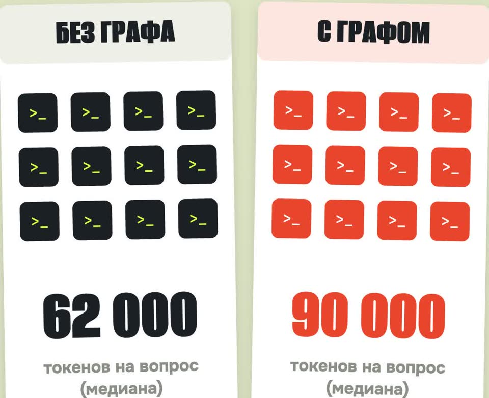

Граф для Claude Code: обещали ×79, мы замерили
Graphify строит граф кода для Claude Code. Мы прогнали на своём проекте 24 сессии с графом и без.
- бесплатно, Apache-2.0
- код не уходит в облако
- 24 сессии замера
- без выдуманных цифр
К ролику «Граф для Claude Code» · обновлено 27 октября 2026

Нужны Python 3.10+, uv и Claude Code. Граф по коду строится у вас на компьютере, без нейросети, ключей и интернета.
Наш замер
Graphify — бесплатный инструмент, который превращает код в граф, чтобы Claude Code спрашивал граф, а не читал файлы. В роликах пишут «в 79 раз меньше токенов». Мы поставили его на свой проект и прогнали 24 сессии с графом и без.
Взяли код нашего движка 3D-скетчей: 32 файла (JavaScript и Python), 367 КБ. Граф построился за 5,5 секунды: 302 узла, 1045 связей. Задали Claude Code шесть настоящих вопросов о коде: где считается старт реплики, какие действия у персонажа, как устроен рендер, как работает синхрон рта, какие бывают планы камеры, и «опиши архитектуру целиком». Каждый вопрос по два раза в обычной сессии и по два раза с подключённым Graphify. Токены брали из отчёта самого Claude Code (claude -p --output-format json).
| Медиана по 12 сессиям | Без графа | С графом |
|---|---|---|
| Все входные токены | 62 004 | 89 808 (+45 %) |
| Новые входные токены (без кэша) | 10 314 | 12 564 (+22 %) |
| Ходов агента | 7 | 7 |
| Время ответа | 28 с | 33 с |
По вопросам, все входные токены, медиана двух прогонов:
| Вопрос | Без графа | С графом |
|---|---|---|
| Старт реплики | 55 006 | 80 870 |
| Действия персонажа | 59 556 | 114 244 |
| Рендер | 62 004 | 92 022 |
| Синхрон рта | 110 365 | 80 640 |
| Планы камеры | 40 784 | 47 583 |
| Архитектура целиком | 129 391 | 115 801 |
На вопросе про архитектуру новых токенов с графом стало на 24 % меньше: 34 тысячи вместо 44. Это единственный вопрос, где граф дал заметную экономию. Качество ответов одинаковое: все 24 ответа верные, со ссылками на нужные строки кода. Один раз Claude без графа пропустил четыре действия персонажа, с графом нашёл все.
graphify benchmark) на нашем графе показывает «в 16,9 раза меньше», но сравнивает он с чтением всех файлов подряд, а так Claude не работает.Сырые данные, скрипт замера и вопросы лежат в нашем рабочем репозитории. Ограничения: один проект на 32 файла, одна модель, по два прогона на вопрос. Разброс между двумя одинаковыми прогонами доходил до 1,8 раза.
Проверить на своём проекте за 4 шага
Поставьте Graphify в отдельное окружение
Внутри проекта, без глобальных установок. Мы ставили именно так.
Пакет на PyPI называется graphifyy, с двумя «y». Остальные graphify* к нему не относятся.
uv venv --python 3.12 .graphify-venv
uv pip install --python .graphify-venv/bin/python graphifyy
export PATH="$PWD/.graphify-venv/bin:$PATH"
graphify --versionТак советует README (мы этот вариант не запускали, он ставит команду для всего пользователя):
uv tool install graphifyygraphify --version печатает версию.
Постройте граф только по коду
Без нейросети и без ключей. На нашем проекте это заняло 5 секунд.
cd ваш-проект
GRAPHIFY_BACKEND=none graphify extract . --code-only
GRAPHIFY_BACKEND=none graphify cluster-only . --no-labelСпросить граф самому:
graphify query "где считается время начала реплики"
graphify explain "envelope"
graphify path "main" "setJaw"Папка graphify-out/: graph.json (граф), GRAPH_REPORT.md (главные узлы и модули) и graph.html (кликабельная картинка).
Подключите граф к Claude Code
Правило в CLAUDE.md, хуки в .claude/settings.json и скилл /graphify в .claude/skills/.
graphify claude install
graphify install --projectgraphify по имени. Если она есть только в вашем окружении, а не в PATH, хук не сработает. Либо добавьте окружение в PATH, либо пропишите в .claude/settings.json полный путь к graphify.graphify query по умолчанию пишется в журнал ~/.cache/graphify-queries.log: вопрос и сколько узлов нашлось. Отключить: export GRAPHIFY_QUERY_LOG_DISABLE=1.В CLAUDE.md правило «сначала graphify query, потом поиск и чтение файлов», а хуки перед поиском и чтением напоминают Claude про граф.
Сравните токены с графом и без
Один и тот же вопрос в двух сессиях.
claude -p "вопрос" --output-format jsonСравните поле usage в двух ответах. У нас разброс между двумя одинаковыми прогонами доходил до 1,8 раза, так что гоняйте каждый вопрос хотя бы дважды.
Когда граф помогает, а когда нет
- Помогает: вопросы «как всё устроено», первое знакомство с чужим большим репозиторием, поиск всех мест, где используется функция, картинка связей для себя (
graph.html). - Не помогает: точечные вопросы «где считается X» в проекте, который Claude находит поиском по словам. Там граф только добавляет шаг.
- Не мерили: монорепо на сотни и тысячи файлов, где обычный поиск выдаёт горы совпадений. Там эффект может быть больше, проверьте на своём проекте.
Справочное
Что такое GraphifyGraphify-Labs/graphify, около 136 тысяч звёзд
Graphify-Labs/graphify: открытый проект на Python, лицензия Apache-2.0, около 136 тысяч звёзд на GitHub (27.10.2026).
- Что строит. Разбирает код через tree-sitter (около 40 языков) и собирает граф: файлы, функции, классы, кто кого вызывает и импортирует. Для кода не нужны ни нейросеть, ни интернет, всё считается у вас на компьютере. Документы, PDF и картинки он уже отдаёт в нейросеть, но это можно выключить.
- Что получаете. Папку
graphify-out/:graph.json(граф),GRAPH_REPORT.md(главные узлы и модули) иgraph.html(кликабельная картинка). - Как его использует Claude Code. В
CLAUDE.mdдописывается правило «сначалаgraphify query, потом поиск и чтение файлов», и ставятся хуки, которые перед поиском и чтением напоминают про граф.
Лицензия и облакоApache-2.0; Graphify Cloud платный
Код Graphify открыт под Apache-2.0: можно пользоваться бесплатно, в том числе в работе, менять и встраивать, если сохранить уведомление о лицензии. Рядом есть платный Graphify Cloud с пробным периодом. Обещание «на 80 % меньше токенов» в README относится к нему, мы его не проверяли. Для графа по коду облако не нужно.
Если застряли
Хуки Graphify не срабатывают
Хуки ищут команду graphify в PATH. Добавьте окружение в PATH или пропишите в .claude/settings.json полный путь к graphify.
Хочу убрать всё
graphify claude uninstall или graphify uninstall --purge (вместе с папкой graphify-out/).
Чего замер не доказывает
- Один проект на 32 файла, одна модель, по два прогона на вопрос.
- Монорепо на сотни и тысячи файлов мы не мерили.
- Graphify Cloud и его «на 80 % меньше токенов» мы не проверяли.
- Цифры — наш замер на нашем коде, а не обещание для вашего.